import numpy as np
import pandas as pd
from sklearn.linear_model import LinearRegression
from joblib import Parallel, delayed
np.random.seed(1234)
n = 10000
k = 1000
y = np.random.normal(size=n)
x = np.random.normal(size=(n, k))
def calculate_r2(i):
model = LinearRegression()
model.fit(x[:, :i+2], y)
r2 = model.score(x[:, :i+2], y)
adj_r2 = 1 - (1 - r2) * (len(y) - 1) / (len(y) - (i+2))
return pd.DataFrame({'k': [i+2], 'r2': [r2], 'r2_adj': [adj_r2]})
result = Parallel(n_jobs=-1)(delayed(calculate_r2)(i) for i in range(k))
r_df = pd.concat(result, ignore_index=True)Множинна регресія
Прикладний статистичний аналіз
Ігор Мірошниченко
КНУ імені Тараса Шевченка | ФІТ
Основні положення
Більше пояснювальних змінних
Ми переходимо від простої лінійної регресії (одна незалежна змінна та одна залежна)
\[ \color{#e64173}{y_i} = \beta_0 + \beta_1 \color{#6A5ACD}{x_i} + u_i \]
до множинної лінійної регресії (декілька незалежних та одна залежна змінні)
\[ \color{#e64173}{y_i} = \beta_0 + \beta_1 \color{#6A5ACD}{x_{1i}} + \beta_2 \color{#6A5ACD}{x_{2i}} + \cdots + \beta_k \color{#6A5ACD}{x_{ki}} + u_i \]
Чому?
Ми можемо краще пояснити варіацію \(y\), покращити прогнози, уникнути зміщення пропущених змінних …
Множинна регресія
\(y_i = \beta_0 + \beta_1 x_{1i} + \beta_2 x_{2i} + u_i\), де \(x_1\) є неперервним, а \(x_2\) є категоріальним
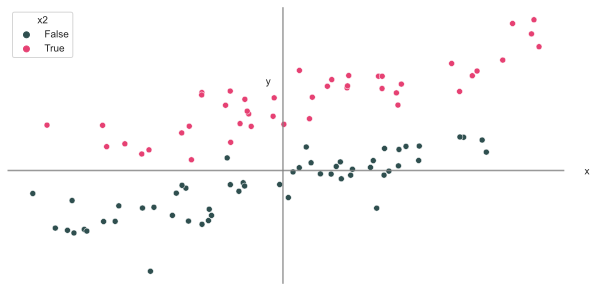Множинна регресія
\(\beta_0\) та категоріальна змінна \(x_2\) керують середніми значеннями груп.
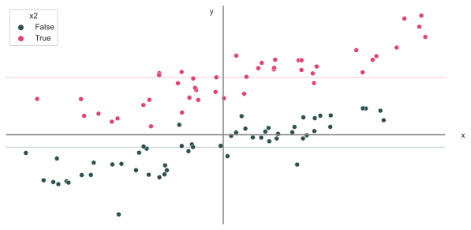Множинна регресія
Якщо прибрати середнє значення груп:
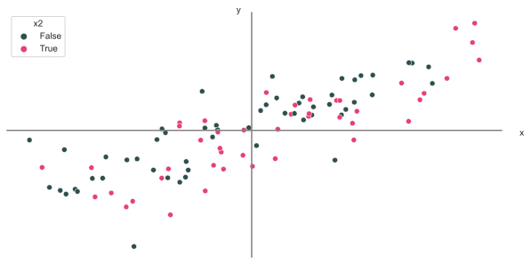Множинна регресія
\(\hat{\beta}_1\) оцінює співвідношення між \(y\) і \(x_1\) після врахування \(x_2\).
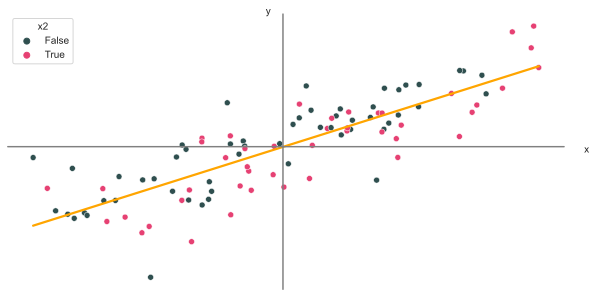Множинна регресія
Інший варіант поглянути на це:
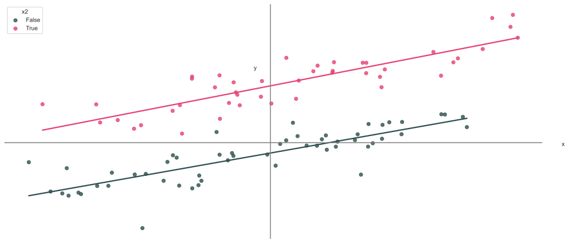Множинна регресія
Поглянемо на оцінювання параметрів моделі…
Для простої лінійної регресії \(y_i = \beta_0 + \beta_1 x_i + u_i\)
\[ \begin{aligned} \hat{\beta}_1 &= \\[0.3em] &= \dfrac{\sum_i \left( x_i - \overline{x} \right) \left( y_i - \overline{y} \right)}{\sum_i \left( x_i -\overline{x} \right)} \\[0.3em] &= \dfrac{\sum_i \left( x_i - \overline{x} \right) \left( y_i - \overline{y} \right)/(n-1)}{\sum_i \left( x_i -\overline{x} \right) / (n-1)} \\[0.3em] &= \dfrac{\mathop{\hat{\text{Cov}}}(x,\,y)}{\mathop{\hat{\text{Var}}} \left( x \right)} \end{aligned} \]
Множинна регресія
Проста лінійна регресія:
\[ \hat{\beta}_1 = \dfrac{\mathop{\hat{\text{Cov}}}(x,\,y)}{\mathop{\hat{\text{Var}}} \left( x \right)} \]
при переході до множинної лінійної регресії оцінка трохи змінюється:
\[ \hat{\beta}_1 = \dfrac{\mathop{\hat{\text{Cov}}}(\color{#e64173}{\tilde{x}_1},\,y)}{\mathop{\hat{\text{Var}}} \left( \color{#e64173}{\tilde{x}_1} \right)} \]
де \(\color{#e64173}{\tilde{x}_1}\) — залишкова змінна \(x_1\) — зміна, що залишається в \(x\) після врахуівння інших пояснювальних змінних.
Множинна регресія
Більш формально розглянемо модель множинної регресії
\[ y_i = \beta_0 + \beta_1 x_1 + \beta_2 x_2 + \beta_3 x_3 + u_i \]
Наша залишкова \(x_{1}\) (яку ми назвали \(\color{#e64173}{\tilde{x}_1}\)) походить від регресії \(x_1\) з intercept та всіх інших пояснювальних змінних і збирає залишки, тобто,
\[ \begin{aligned} \hat{x}_{1i} &= \hat{\gamma}_0 + \hat{\gamma}_2 \, x_{2i} + \hat{\gamma}_3 \, x_{3i} \\ \color{#e64173}{\tilde{x}_{1i}} &= x_{1i} - \hat{x}_{1i} \end{aligned} \]
що дозволяє нам краще зрозуміти нашу оцінку МНК множинної регресії
\[ \hat{\beta}_1 = \dfrac{\mathop{\hat{\text{Cov}}}(\color{#e64173}{\tilde{x}_1},\,y)}{\mathop{\hat{\text{Var}}} \left( \color{#e64173}{\tilde{x}_1} \right)} \]
Оцінювання моделі
Показники хорошої відповідності (анг. goodness of fit) намагаються проаналізувати, наскільки добре наша модель описує (відповідає) даним.
Популярний показник: \(R^2\) [R-квадрат] (він же коефіцієнт детермінації)
\[ R^2 = \dfrac{\sum_i (\hat{y}_i - \overline{y})^2}{\sum_i \left( y_i - \overline{y} \right)^2} = 1 - \dfrac{\sum_i \left( y_i - \hat{y}_i \right)^2}{\sum_i \left( y_i - \overline{y} \right)^2} \]
Зверніть увагу на нашого старого друга ESS: \(\sum_i \left( y_i - \hat{y}_i \right)^2 = \sum_i e_i^2\).
\(R^2\) буквально вказує нам частку дисперсії в \(y\), яку враховує наша модель. Таким чином \(0 \leq R^2 \leq 1\).
Множинна регресія
Проблема: коли ми додаємо змінні до нашої моделі, \(R^2\) постійно збільшується.
Щоб побачити цю проблему, ми можемо змоделювати набір даних із 10 000 спостережень за \(y\) і 1000 випадкових змінних \(x_k\). Немає зв’язку між \(y\) і \(x_k\)!
Псевдокод симуляції:
- Згенеруйте 10 000 спостережень \(y\)
- Згенеруйте 10 000 спостережень за змінними від \(x_1\) до \(x_{1000}\)
- Регресія:
- LM1: регресія \(y\) на \(x_1\); запис R2
- LM2: регресія \(y\) на \(x_1\) і \(x_2\); запис R2
- LM1000: регресія \(y\) на \(x_1\), \(x_2\) і \(x_3\); запис R2
- …
- LM1000: регресія \(y\) на \(x_1\), \(x_2\), …, \(x_{1000}\); запис R2
Множинна регресія
Проблема: коли ми додаємо змінні до нашої моделі, \(R^2\) постійно збільшується.
Python код для симуляції:
Множинна регресія
Проблема: коли ми додаємо змінні до нашої моделі, \(R^2\) постійно збільшується.
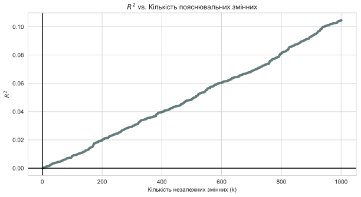Множинна регресія
Що робити? Рішення перше: Скоригований \(\color{#e64173}{R^2}\)
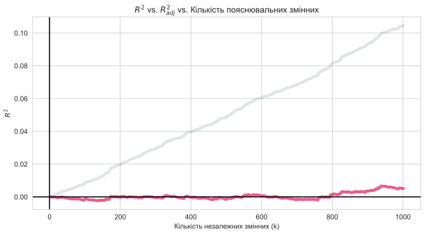Множинна регресія
Проблема: коли ми додаємо змінні до нашої моделі, \(R^2\) постійно збільшується.
Рішення перше: Штрафувати за кількість змінних, наприклад, скорегований \(R^2\):
\[ \overline{R}^2 = 1 - \dfrac{\sum_i \left( y_i - \hat{y}_i \right)^2/(n-k-1)}{\sum_i \left( y_i - \overline{y} \right)^2/(n-1)} \]
Примітка
Скоригований \(R^2\) не обов’язково повинен бути від 0 до 1.
Компроміси
Є компроміси, про які слід пам’ятати, коли ми додаємо/видаляємо змінні:
Менше змінних
- Пояснює менше варіації \(y\)
- Простота інтерпретації та візуалізації
- Можливо, доведеться потурбуватися про зміщення пропущених змінних
Більше змінних
- Більша ймовірність знайти хибні зв’язки (статистично значущі через випадковість — не відображають справжнього зв’язку на рівні генеральної сукупності)
- Складніше проводити інтерпретацію та візуалізацію
- Ви все ще можете пропустити важливі змінні — зміщення пропущених змінних
Зміщення при неврахуванні впливової змінної
Зміщення при неврахуванні впливової змінної
Зміщення при неврахуванні впливової змінної (анг. omitted-variable bias, OVB) виникає, коли ми пропускаємо змінну, яка
впливає на нашу змінну \(y\)
корелює з пояснювальною змінною \(x_j\)
Як випливає з назви, ця ситуація призводить до зміщення нашої оцінки \(\beta_j\).
Примітка
OVB притаманна не тільки множинній регресії, але вимагає, щоб кілька змінних впливали на \(y\).
Приклад
Уявімо просту модель доходу, яку отримує окремий \(i\)
\[ \text{Pay}_i = \beta_0 + \beta_1 \text{School}_i + \beta_2 \text{Male}_i + u_i \]
де
- \(\text{School}_i\) - роки навчання \(i\)
- \(\text{Male}_i\) - змінна-індикатор того, чи є \(i\) чоловіком.
таким чином
- \(\beta_1\): дохід від додаткового року навчання (за інших рівних умов)
- \(\beta_2\): «премія» за те, що ти чоловік (за інших рівних умов)
Якщо \(\beta_2 > 0\), то існує дискримінація жінок — вони отримують меншу зарплату.
Приклад, продовження
З нашої моделі
\[ \text{Pay}_i = \beta_0 + \beta_1 \text{School}_i + \beta_2 \text{Male}_i + u_i \]
Якщо дослідження зосереджено на зв’язку між оплатою праці та освітою, тобто,
\[ \text{Pay}_i = \beta_0 + \beta_1 \text{School}_i + \left(\beta_2 \text{Male}_i + u_i\right) \]
\[ \text{Pay}_i = \beta_0 + \beta_1 \text{School}_i + \varepsilon_i \]
де \(\varepsilon_i = \beta_2 \text{Male}_i + u_i\).
Ми використали наше припущення про екзогенність, щоб отримати неупередженість OLS.
Але навіть якщо \(\mathop{\boldsymbol{E}}\left[ u | X \right] = 0\), це невірно, що \(\mathop{\boldsymbol{E}}\left[ \varepsilon | X \right] = 0\), якщо \(\beta_2 \neq 0\).
Приклад, продовження
З нашої моделі
\[ \text{Pay}_i = \beta_0 + \beta_1 \text{School}_i + \beta_2 \text{Male}_i + u_i \]
Якщо дослідження зосереджено на зв’язку між оплатою праці та освітою, тобто,
\[ \text{Pay}_i = \beta_0 + \beta_1 \text{School}_i + \left(\beta_2 \text{Male}_i + u_i\right) \]
\[ \text{Pay}_i = \beta_0 + \beta_1 \text{School}_i + \varepsilon_i \]
де \(\varepsilon_i = \beta_2 \text{Male}_i + u_i\).
Зокрема, екзогенність вимагає, щоб \(\text{School}\) і \(\text{Male}\) не були пов’язані.
Інакше OLS є зміщенним.
Приклад, продовження
Спробуємо візуалізувати…
Модель ГС:
\[ \text{Pay}_i = 20 + 0.5 \times \text{School}_i + 10 \times \text{Male}_i + u_i \]
Наша регресійна модель, яка страждає від зміщення пропущених змінних:
\[ \text{Pay}_i = \hat{\beta}_0 + \hat{\beta}_1 \times \text{School}_i + e_i \]
Уявіть, що жінки в середньому навчаються більше, ніж чоловіки.
Приклад, продовження
\(\text{Pay}_i = 20 + 0.5 \times \text{School}_i + 10 \times \text{Male}_i + u_i\)
Зв’язок між оплатою праці та навчанням.
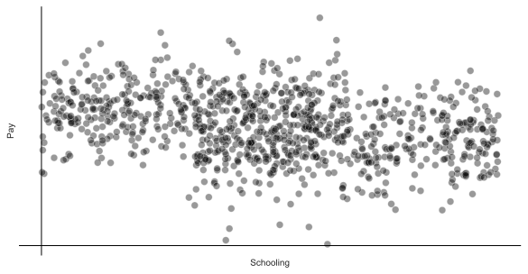Приклад, продовження
\(\text{Pay}_i = 20 + 0.5 \times \text{School}_i + 10 \times \text{Male}_i + u_i\)
Зміщена оцінка регресії: \(\widehat{\text{Pay}}_i = 31.5 + -0.9 \times \text{School}_i\)
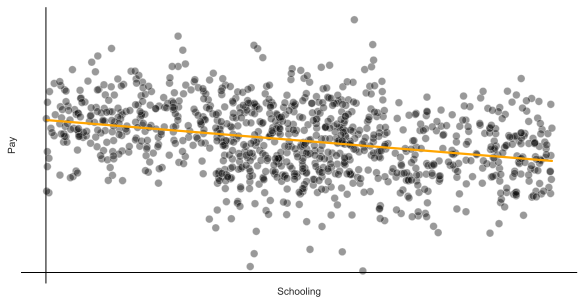Приклад, продовження
\(\text{Pay}_i = 20 + 0.5 \times \text{School}_i + 10 \times \text{Male}_i + u_i\)
Пропущена змінна: стать (жіноча і чоловіча)
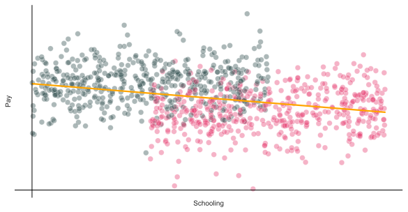Приклад, продовження
\(\text{Pay}_i = 20 + 0.5 \times \text{School}_i + 10 \times \text{Male}_i + u_i\)
Використання пропущеної змінної: стать (жіночий і чоловічий)
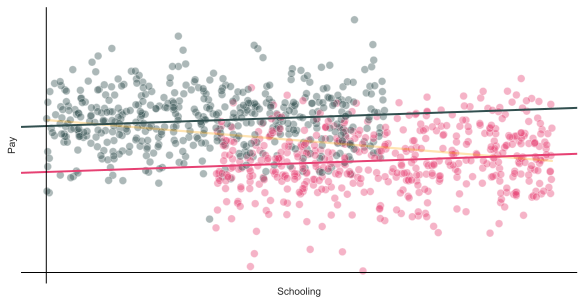Приклад, продовження
\(\text{Pay}_i = 20 + 0.5 \times \text{School}_i + 10 \times \text{Male}_i + u_i\)
Незміщенна оцінка регресії: \(\widehat{\text{Pay}}_i = 20.8 + 0.4 \times \text{School}_i + 9.5 \times \text{Male}_i\)

Рішення
Не пропускайте змінні
Інструментальні змінні та двоетапний метод найменших квадратів
Попередження
Бувають ситуації, у яких жодне рішення неможливе.
Інтерпретація коефіцієнтів
Неперервні змінні
Розглянемо взаємозв’язок
\[ \text{Pay}_i = \beta_0 + \beta_1 \, \text{School}_i + u_i \]
де
- \(\text{Pay}_i\) — це неперервна змінна, яка вимірює оплату праці
- \(\text{School}_i\) — це неперервна змінна, яка вимірює роки навчання
Інтерпретація
- \(\beta_0\): \(y\)-intercept, тобто, \(\text{Pay}\), коли \(\text{School} = 0\)
- \(\beta_1\): очікувана зміна \(\text{Pay}\) при збільшенні на одну одиницю \(\text{School}\)
Неперервні змінні
Отримання нахилу:
\[ \begin{aligned} \mathop{\boldsymbol{E}}\left[ \text{Pay} | \text{School} = \ell + 1 \right] - \mathop{\boldsymbol{E}}\left[ \text{Pay} | \text{School} = \ell \right] &= \\[0.5em] \mathop{\boldsymbol{E}}\left[ \beta_0 + \beta_1 (\ell + 1) + u \right] - \mathop{\boldsymbol{E}}\left[ \beta_0 + \beta_1 \ell + u \right] &= \\[0.5em] \left[ \beta_0 + \beta_1 (\ell + 1) \right] - \left[ \beta_0 + \beta_1 \ell \right] &= \\[0.5em] \beta_0 - \beta_0 + \beta_1 \ell - \beta_1 \ell + \beta_1 &= \beta_1 \end{aligned} \]
Тобто, нахил дає очікуване збільшення нашої змінної результату при збільшенні на одну одиницю пояснювальної змінної.
Неперервні змінні
Якщо у нас є кілька пояснювальних змінних, наприклад,
\[ \text{Pay}_i = \beta_0 + \beta_1 \, \text{School}_i + \beta_2 \, \text{Ability}_i + u_i \]
тоді тлумачення трохи змінюється.
\[ \begin{aligned} \mathop{\boldsymbol{E}}\left[ \text{Pay} | \text{School} = \ell + 1 \land \text{Ability} = \alpha \right] - & \\ \mathop{\boldsymbol{E}}\left[ \text{Pay} | \text{School} = \ell \land \text{Ability} = \alpha \right] &= \\ \mathop{\boldsymbol{E}}\left[ \beta_0 + \beta_1 (\ell + 1) + \beta_2 \alpha + u \right] - \mathop{\boldsymbol{E}}\left[ \beta_0 + \beta_1 \ell + \beta_2 \alpha + u \right] &= \\ \left[ \beta_0 + \beta_1 (\ell + 1) + \beta_2 \alpha \right] - \left[ \beta_0 + \beta_1 \ell + \beta_2 \alpha \right] &= \\ \beta_0 - \beta_0 + \beta_1 \ell - \beta_1 \ell + \beta_1 + \beta_2 \alpha - \beta_2 \alpha &= \beta_1 \end{aligned} \]
Тобто, нахил дає очікуване збільшення нашої змінної при збільшенні на одну одиницю пояснювальної змінної, при незмінності всіх інших змінних.
Неперервні змінні
Альтернативний підхід
Розгляньте модель
\[ y = \beta_0 + \beta_1 \, x + u \]
Похідна:
\[ \dfrac{dy}{dx} = \beta_1 \]
Категоріальні змінні
\[ \text{Pay}_i = \beta_0 + \beta_1 \, \text{Female}_i + u_i \]
де
- \(\text{Pay}_i\) — це неперервна змінна, яка вимірює оплату праці
- \(\text{Female}_i\) - двійкова/індикаторна змінна, яка приймає \(1\), коли \(i\) є жіночою
Інтерпретація
- \(\beta_0\): очікувана \(\text{Pay}\) для чоловіків (тобто, коли \(\text{Female} = 0\))
- \(\beta_1\): очікувана різниця в \(\text{Pay}\) між жінками та чоловіками
- \(\beta_0 + \beta_1\): очікувана \(\text{Pay}\) для жінок
Категоріальні змінні
\[ \begin{aligned} \mathop{\boldsymbol{E}}\left[ \text{Pay} | \text{Male} \right] &= \mathop{\boldsymbol{E}}\left[ \beta_0 + \beta_1\times 0 + u_i \right] \\ &= \mathop{\boldsymbol{E}}\left[ \beta_0 + 0 + u_i \right] \\ &= \beta_0 \end{aligned} \]
\[ \begin{aligned} \mathop{\boldsymbol{E}}\left[ \text{Pay} | \text{Female} \right] &= \mathop{\boldsymbol{E}}\left[ \beta_0 + \beta_1\times 1 + u_i \right] \\ &= \mathop{\boldsymbol{E}}\left[ \beta_0 + \beta_1 + u_i \right] \\ &= \beta_0 + \beta_1 \end{aligned} \]
Примітка
- Якщо немає інших змінних, то \(\hat{\beta}_1\) дорівнює різниці середніх значень групи, наприклад, \(\overline{x}_\text{Female} - \overline{x }_\text{Male}\).
- Інтерпретація незмінність всіх інших змінних також застосовується до категоріальних змінних у множинній регресії.
Категоріальні змінні
\(y_i = \beta_0 + \beta_1 x_i + u_i\) для двійкової змінної \(x_i = \{\color{#314f4f}{0}, \, \color{#e64173}{1}\}\)

Категоріальні змінні
\(y_i = \beta_0 + \beta_1 x_i + u_i\) для двійкової змінної \(x_i = \{\color{#314f4f}{0}, \, \color{#e64173}{1}\}\)
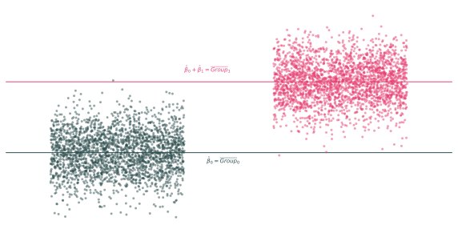Взаємодії
Взаємодії дозволяють змінювати вплив однієї змінної залежно від рівня іншої змінної.
Приклади
Чи змінюється вплив навчання на оплату за статтю?
Чи змінюється вплив статі на оплату залежно від раси?
Чи змінюється вплив навчання на оплату праці залежно від досвіду?
Взаємодії
Раніше ми розглядали модель, яка дозволяла жінкам і чоловікам мати різну заробітну плату, але модель припускала, що вплив навчання на оплату праці буде однаковим для всіх:
\[ \text{Pay}_i = \beta_0 + \beta_1 \, \text{School}_i + \beta_2 \, \text{Female}_i + u_i \]
але ми також можемо припустити, щоб вплив освіти відрізнявся залежно від статі:
\[ \text{Pay}_i = \beta_0 + \beta_1 \, \text{School}_i + \beta_2 \, \text{Female}_i + \beta_3 \, \text{School}_i\times\text{Female}_i + u_i \]
Взаємодії
Модель, коли навчання в школі має однаковий ефект для всіх (F і M):
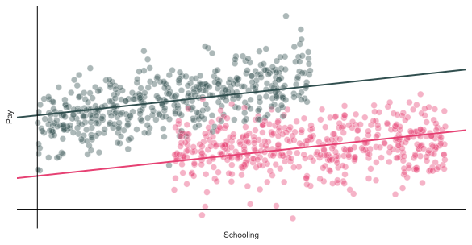Взаємодії
Модель, у якій вплив шкільного навчання може відрізнятися залежно від статі (F і M):
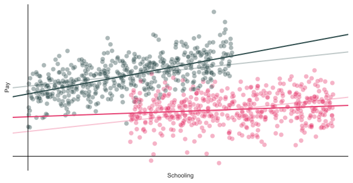Взаємодії
Інтерпретація коефіцієнтів може бути дещо складною у зв’язку з взаємодіями, але головне — уважно пропрацювати математику.
\[ \text{Pay}_i = \beta_0 + \beta_1 \, \text{School}_i + \beta_2 \, \text{Female}_i + \beta_3 \, \text{School}_i\times\text{Female}_i + u_i \]
Очікувана віддача від додаткового року навчання для жінок:
\[ \begin{aligned} \mathop{\boldsymbol{E}}\left[ \text{Pay}_i | \text{Female} \land \text{School} = \ell + 1 \right] - \mathop{\boldsymbol{E}}\left[ \text{Pay}_i | \text{Female} \land \text{School} = \ell \right] &= \\ \mathop{\boldsymbol{E}}\left[ \beta_0 + \beta_1 (\ell+1) + \beta_2 + \beta_3 (\ell + 1) + u_i \right] - \mathop{\boldsymbol{E}}\left[ \beta_0 + \beta_1 \ell + \beta_2 + \beta_3 \ell + u_i \right] &= \\ \beta_1 + \beta_3 \end{aligned} \]
Подібним чином \(\beta_1\) дає очікувану віддачу від додаткового року навчання для чоловіків. Таким чином, \(\beta_3\) дає різницю у віддачі від навчання для жінок і чоловіків.
Лог-лінійна специфікація
В економіці ви часто побачите змінену залежну змінну (логарифмічну) з лінійними (не логарифмічну) пояснювальними змінними, наприклад,
\[ \log(\text{Pay}_i) = \beta_0 + \beta_1 \, \text{School}_i + u_i \]
Ця специфікація змінює нашу інтерпретацію коефіцієнтів нахилу.
Інтерпретація
Збільшення нашої пояснювальної змінної на одну одиницю збільшує залежну змінну приблизно на \(\beta_1\times 100\) відсотків.
Приклад: Додатковий рік навчання збільшує платню приблизно на 3 відсотки (для \(\beta_1 = 0,03\)).
Лог-лінійна специфікація
Виведення
Розглянемо лог-лінійну модель
\[ \log(y) = \beta_0 + \beta_1 \, x + u \]
і диференціал
\[ \dfrac{dy}{y} = \beta_1 dx \]
Таким чином, незначна зміна в \(x\) (тобто, \(dx\)) призводить до \(\beta_1 dx\) відсоткової зміни в \(y\).
Лог-лінійна специфікація
Оскільки логарифмічно-лінійна специфікація має іншу інтерпретацію, вам потрібно переконатися, що вона відповідає вашому процесу/моделі генерування даних.
\(x\) змінює \(y\) у абсолютних значенняї (наприклад, збільшення на 3 одиниці) або у відсотках (наприклад, збільшення на 10 відсотків)?
Тобто, ви повинні бути впевнені, що експоненціальний зв’язок має сенс:
\[ \log(y_i) = \beta_0 + \beta_1 \, x_i + u_i \iff y_i = e^{\beta_0 + \beta_1 x_i + u_i} \]
Лог-лінійна специфікація
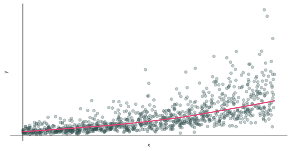Лог-логарифмічна специфікація
Так само економетристи часто використовують логарифмічні моделі, в яких залежна змінна логарифмується і принаймні одна пояснювальна змінна логарифмується
\[ \log(\text{Pay}_i) = \beta_0 + \beta_1 \, \log(\text{School}_i) + u_i \]
Інтерпретація:
- Збільшення \(x\) на один відсоток призведе до зміни \(y\) на \(\beta_1\) відсотків.
- Часто трактується як еластичність.
Лог-логарифмічна специфікація
Виведення
Розглянемо модель log-log
\[ \log(y) = \beta_0 + \beta_1 \, \log(x) + u \]
і диференціал
\[ \dfrac{dy}{y} = \beta_1 \dfrac{dx}{x} \]
який говорить, що при збільшенні \(x\) на один відсоток ми побачимо збільшення \(y\) на \(\beta_1\) відсоток. Як еластичність:
\[ \dfrac{dy}{dx} \dfrac{x}{y} = \beta_1 \]
Лог-лінійна специфікація з бінарною змінною
Примітка
Якщо у вас є логарифмічно-лінійна модель із двійковою змінною індикатора, інтерпретація коефіцієнта для цієї змінної змінюється.
Розглянемо
\[ \log(y_i) = \beta_0 + \beta_1 x_1 + u_i \]
для двійкової змінної \(x_1\).
Тепер інтерпретація \(\beta_1\)
- Коли \(x_1\) змінюється з 0 на 1, \(y\) зміниться на \(100 \times \left( e^{\beta_1} -1 \right)\) відсотків.
- Коли \(x_1\) змінюється з 1 на 0, \(y\) зміниться на \(100 \times \left( e^{-\beta_1} -1 \right)\) відсотків.
Лог-логарифмічна специфікація
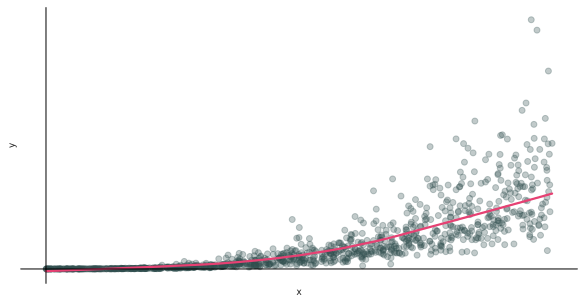Додаткові теми
Статистичний вивід vs. прогноз
Поки що ми зосереджувалися в основному на статистичних висновках — використовували оцінки та їхні властивості розподілу, щоб спробувати дізнатися про основні невідомі параметри сукупності.
\[ y\_i = \color{#e64173}{\hat{\beta}_{0}} + \color{#e64173}{\hat{\beta_1}} \, x_{1i} + \color{#e64173}{\hat{\beta_2}} \, x_{2i} + \cdots + \color{#e64173}{\hat{\beta}_{k}} \, x_{ki} + e_i \]
Прогнозування включає досить різні теми/інструменти (науки про дані/машинного навчання) — створення моделей, які точно оцінюють окремі спостереження.
\[ \color{#e64173}{\hat{y}_i} = \mathop{\hat{f}}\left( x_1,\, x_2,\, \ldots x_k \right) \]
Статистичний вивід vs. прогноз
Коротко
Вивід: причинно-наслідковий зв’язок, \(\hat{\beta}_k\) (послідовний і ефективний), стандартні помилки/перевірка гіпотез для \(\hat{\beta}_k\), загалом МНК
Прогноз: кореляція, \(\hat{y}_i\) (низька помилка), вибір моделі, нелінійні моделі набагато поширеніші
Ефекти лікування та причинно-наслідковий зв’язок
Значна частина сучасної (мікро)економетрики зосереджена на причинно-наслідковому оцінюванні (виявленні) ефекту програм/політики, наприклад,
- Припинення роботи уряду
- Мінімальна заробітна плата
- Легалізація рекреаційного канабісу
- Заборони щодо зарплати
- Дошкільні заклади
- Закон про чисту воду
У цій літературі програма часто є двійковою змінною, і ми надаємо великого значення пошуку неупередженої оцінки ефекту програми, \(\hat{\tau}\).
\[ \text{Outcome}_i = \beta_0 + \tau \, \text{Program}_i + u_i \]
Трансформації
Наше припущення про лінійність вимагає
- параметри вводяться лінійно (тобто \(\beta_k\), помножене на змінні)
- \(u_i\) збурення є адитивні
Ми допускаємо нелінійні зв’язки між \(y\) і пояснювальними змінними.
Приклади
Поліноми та взаємодії: \(y_i = \beta_0 + \beta_1 x_1 + \beta_2 x_1^2 + \beta_3 x_2 + \beta_4 x_2^2 + \beta_5 \left( x_1 x_2 \right) + u_i\)
Експоненти та логарифми: \(\log(y_i) = \beta_0 + \beta_1 x_1 + \beta_2 e^{x_2} + u_i\)
Індикатори та порогові значення: \(y_i = \beta_0 + \beta_1 x_1 + \beta_2 \, \mathbb{I}(x_1 \geq 100) + u_i\)
Трансформації
Завдання трансформації: безмежні можливості. Що ми обираємо?
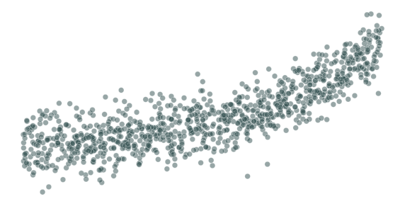Трансформації
\(y_i = \beta_0 + \beta_1 x + u_i\)
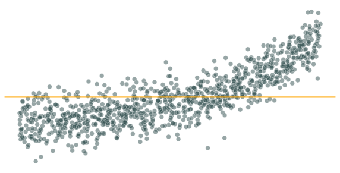Трансформації
\(y_i = \beta_0 + \beta_1 x + u_i\)
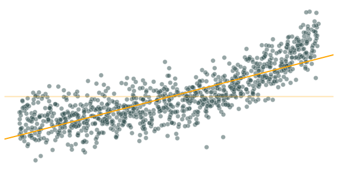Трансформації
\(y_i = \beta_0 + \beta_1 x + \beta_2 x^2 + u_i\)
Трансформації
\(y_i = \beta_0 + \beta_1 x + \beta_2 x^2 + \beta_3 x^3 + u_i\)
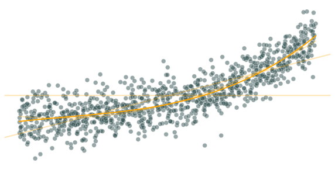Трансформації
\(y_i = \beta_0 + \beta_1 x + \beta_2 x^2 + \beta_3 x^3 + \beta_4 x^4 + u_i\)
Трансформації
\(y_i = \beta_0 + \beta_1 x + \beta_2 x^2 + \beta_3 x^3 + \beta_4 x^4 + \beta_5 x^5 + u_i\)
Трансформації
Істина: \(y_i = 2 e^{x} + u_i\)
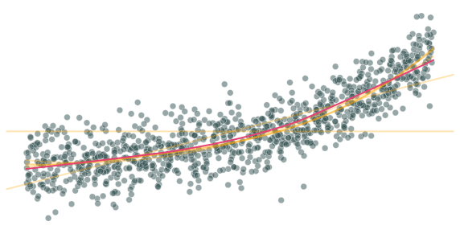Викиди
Оскільки МНК мінімізує суму квадратів помилок, викиди можуть відігравати велику роль у наших оцінках.
Поширені підходи
Видаліть викиди з набору даних
Замініть викиди 99th> процентилем їхньої змінної (Windsorize)
Візьміть логарифм змінної, щоб «потурбуватися» про викиди
Нічого не робити. Викиди не завжди погані. Деякі люди «далекі» від середнього рівня. Можливо, немає сенсу намагатися змінити цей варіант.
Пропущені дані
Так само відсутність даних може вплинути на ваші результати.
Python не знає, як впоратися з відсутнім спостереженням.
Пропущені дані
Якщо ви виконуєте регресію із відсутніми значеннями, Python може видалити спостереження, у яких відсутні ці значення.
Якщо спостереження відсутні невипадковим чином, випадкова вибірка може виявитися невипадковою.
| coef | std err | t | P>|t| | [0.025 | 0.975] | |
| const | -4.0248 | 0.478 | -8.416 | 0.000 | -4.963 | -3.086 |
| x1 | 11.1738 | 0.273 | 40.861 | 0.000 | 10.637 | 11.711 |
Дякую за увагу!